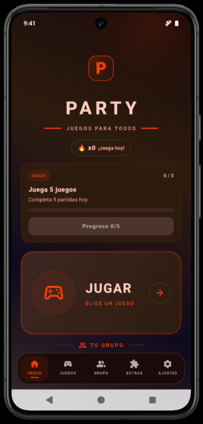
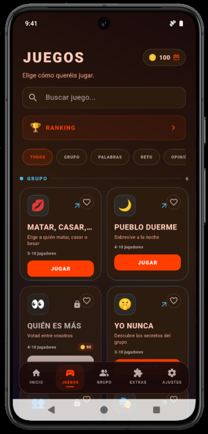
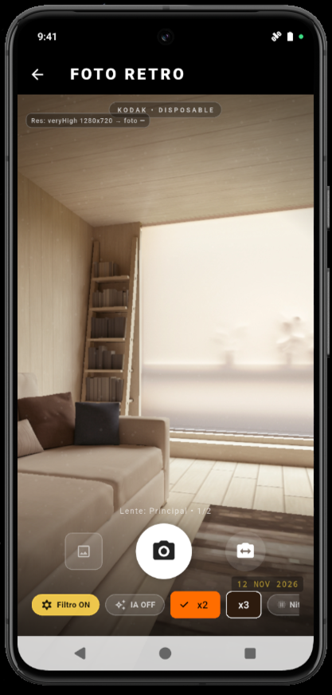
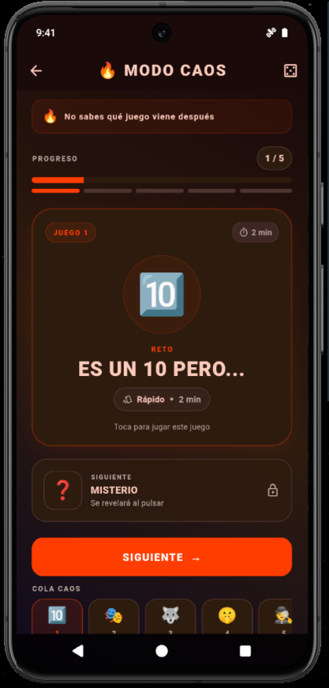

Juegos para grupos
Tabú, ¿Quién soy?, Adivina, Impostor, Bomba, Mímica, Debate, Pueblo duerme, Yo nunca y muchos más. Más de 14 experiencias para compartir.
La app para convertir cualquier reunión en una fiesta.
Juegos para grupos, una cámara con estilo retro y un creador inteligente de planes que sigue en desarrollo. Todo reunido en una sola aplicación, en español y sin anuncios.
Consulta el repositorio, el código y las publicaciones de Party en GitHub.
Nota: el creador de planes todavía no funciona en esta versión. El resto de las funciones disponibles se puede utilizar con normalidad; anunciaremos la herramienta de planes cuando esté lista.
Tabú, ¿Quién soy?, Adivina, Impostor, Bomba, Mímica, Debate, Pueblo duerme, Yo nunca y muchos más. Más de 14 experiencias para compartir.
Filtros con carácter, HDR, grano fotográfico, sello de fecha y opciones de mejora de imagen para dar a tus fotos un aire analógico.
Esta función todavía no está operativa en la versión publicada. La estamos preparando para una próxima actualización.
Consigue monedas jugando, desbloquea elementos y personaliza tu avatar con accesorios y estilos diferentes.
Efectos, música ambiental, cuenta atrás y vibración con controles independientes para adaptar la experiencia.
Controles intuitivos, opciones táctiles y por movimiento, y una experiencia pensada para jugar en grupo.
Estas son cuatro pantallas de Party. Pulsa cualquier captura para ampliarla y navegar por la galería.




Consulta el repositorio del proyecto y sus publicaciones. Cuando haya una versión estable publicada, el enlace de última versión abrirá automáticamente la release más reciente.